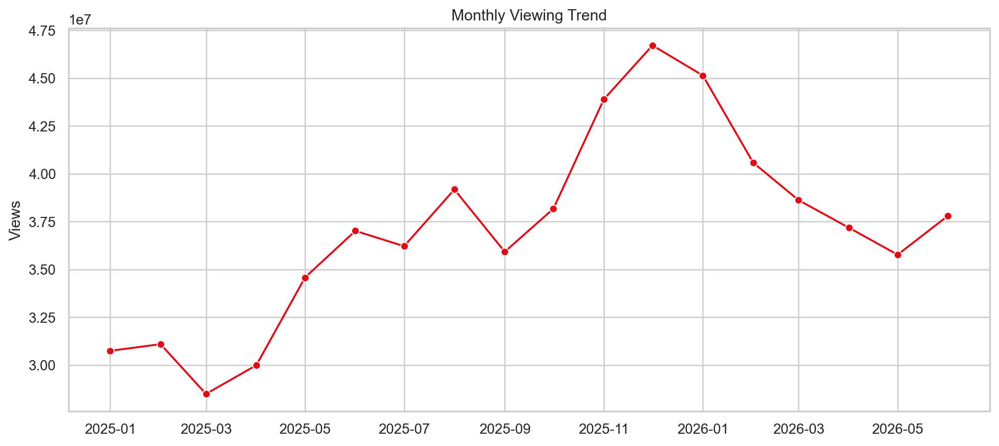

01 · SQL + Python Analytics
StreamWave Content Performance Analytics
Problem
Which titles, genres, devices, and regions drive reach, engagement, and modeled revenue?
Process
Cleaned 15,035 records, built SQL analyses, explored trends in Python, and translated findings into recommendations.
Tools
PostgreSQL, Python, Matplotlib
Results
Identified Drama as the reach leader, Animation as the completion leader, and December as the peak viewing month.